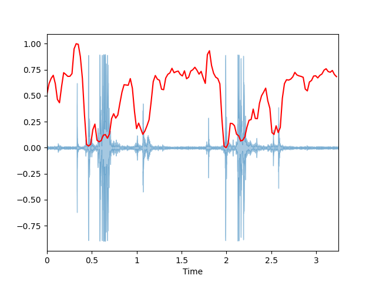
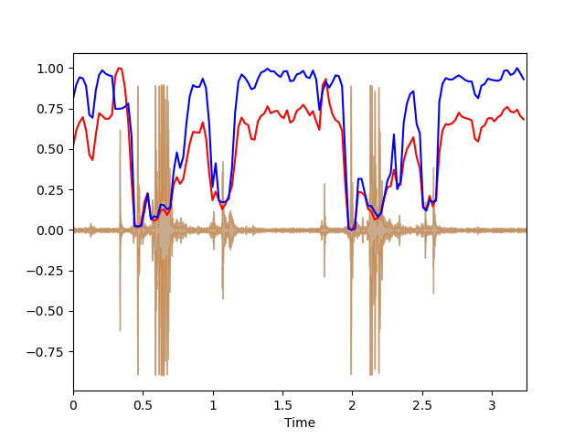
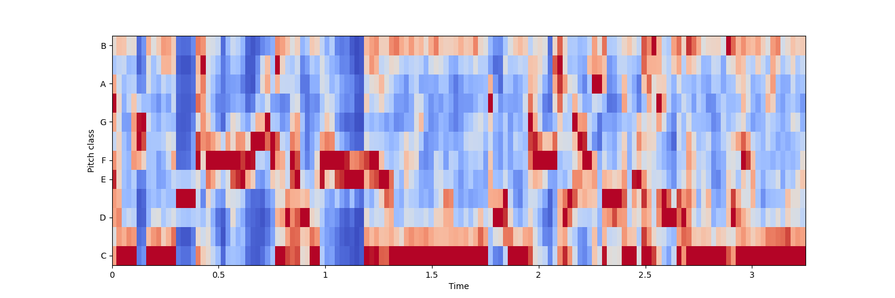
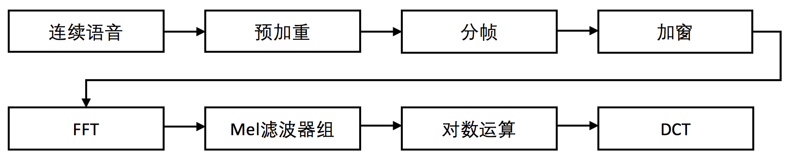
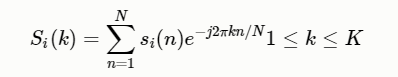
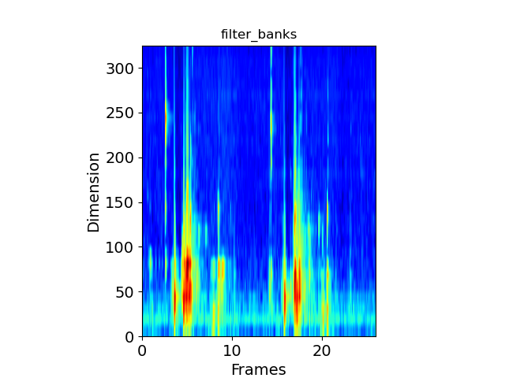
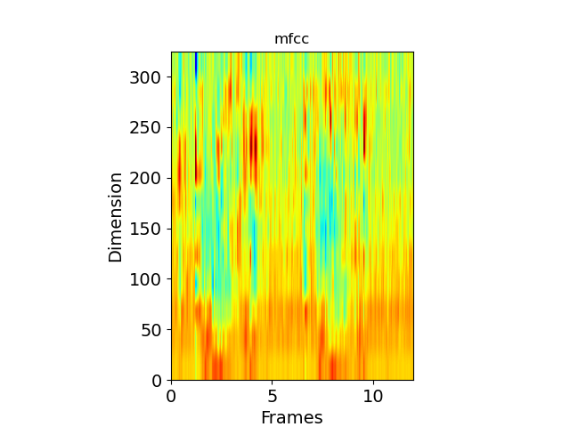

音频处理工具
Librosa库，是python的一个音频处理的包
安装：
读取音频/波形文件
1
| signal, sample_rate = librosa.load(path='chew.wav',sr,mono,offset,duration)
|
函数参数
| 参数 |
作用 |
| path |
音频路径 |
| sr |
采样率（默认22050，但是有重采样的功能） |
| mono |
设置为true是单通道，否则是双通道 |
| offset |
音频读取的时间 |
| duration |
获取音频的时长 |
返回：
- y ：音频时间序列，一维numpy数组
- s ：音频的采样率
采样率
采样率即在一秒的音频时间里进行采样的次数，采样率为20k时即是一秒钟对音频进行20000次采样。
根据香农采样定理，想要完整地还原声音，采样率至少要为音频中最高频率的2倍。
人耳的可感知频率是20-20khz，因此为真实地还原音频，CD采用了40+kHz的采样率。
绘制波形图
1
| librosa.display.waveplot(signal, sample_rate)
|

绘制声谱图
声音信号是一维信号，直观上只能看到时域信息，不能看到频域信息。通过傅里叶变换(FT)可以变换到频域，但是丢失了时域信息，无法看到时频关系。声谱图是声音或其他信号的频率随时间变化时的频谱（spectrum）的一种直观表示
1
2
3
4
5
| D = librosa.amplitude_to_db(np.abs(librosa.stft(signal)), ref=np.max)
librosa.display.specshow(D, y_axis='linear')
plt.colorbar(format = '%+2.0f dB')
plt.title('Linear-frequency power spectrogram of aloe')
plt.show()
|

过零率（Zero Crossing Rate）
过零率（zero crossing rate）是一个信号符号变化的比率，即，在每帧中，语音信号从正变为负或从负变为正的次数。 这个特征已在语音识别和音乐信息检索领域得到广泛使用，通常对类似金属、摇滚等高冲击性的声音的具有更高的价值。
1
| zero_crossings = librosa.zero_crossings(signal, pad=False)
|
频谱质心 （Spectral Centroid）
谱质心(Spectral Centroid)是描述音色属性的重要物理参数之一，是频率成分的重心，是在一定频率范围内通过能量加权平均的频率，其单位是Hz。它是声音信号的频率分布和能量分布的重要信息。
1
2
3
4
5
6
7
8
9
10
11
12
| spectral_centroids = librosa.feature.spectral_centroid(signal, sample_rate)[0]
frames = range(len(spectral_centroids))
t = librosa.frames_to_time(frames)
def normalize(x, axis=0):
return sklearn.preprocessing.minmax_scale(x, axis=axis)
librosa.display.waveplot(signal, sample_rate, alpha=0.4)
plt.plot(t, normalize(spectral_centroids), color='r')
plt.savefig("spectral_C.png")
|

声谱衰减 (Spectral Roll-off）
声谱衰减是对声音信号形状（波形图）的一种衡量，表示低于总频谱能量的指定百分比的频率(默认为85%)。
1
2
3
4
| spectral_rolloff = librosa.feature.spectral_rolloff(signal+0.01, sample_rate)[0]
librosa.display.waveplot(signal, sample_rate, alpha=0.4)
plt.plot(t, normalize(spectral_rolloff), color='b')
plt.savefig("spectral_R.png")
|

色度频率 （Chroma Frequencies）
色度频率是音乐音频有趣且强大的表示，其中整个频谱被投影到12个区间，代表音乐八度音的12个不同的半音（或色度）
1
2
3
4
5
6
7
| hop_length = 512
chromagram =librosa.feature.chroma_stft(signal,sample_rate,
hop_length=hop_length )
plt.figure( figsize=(15,5 ))
librosa.display.specshow(chromagram, x_axis='time', y_axis='chroma',
hop_length=hop_length,cmap='coolwarm' )
plt.savefig("chroma_F.png")
|

MFCC 特征提取（ Mel Frequency Cepstral Coefficents）
感知实验表明，人耳对于声音信号的感知聚焦于某一特定频率区域内，而非在整个频谱包络中。耳蜗的滤波作用是在对数频率尺度进行的，在1000Hz以下为线性，在1000Hz以上为对数，这就使得人耳对低频比高频更敏感。
心理物理学研究表明，人类对语音信号频率内容的感知遵循一种主观上定义的非线性尺度，该非线性标度可被称为“Mel”标度。
一般来说，声音的频率和人耳所听到的声音高低不成正比，而是与音调(人们为了描述声音高低而定义的概念)成正比，声音的频率分布与临界频带分布相一致。梅尔频率标度的单位是 Mel，它是为了描绘音调而被定义出来的，它更生动地反映出了频率和音调的非线性关系。
MFCC是将人耳的听觉感知特性和语音产生机制相结合，因此目前大多数语音识别系统广泛使用这种特征。对频率轴不均匀划分是MFCC特征区别于前面普通倒谱特征的最重要的特点，变换到Mel域后，Mel带通滤波器组的中心频率是按照Mel刻度均匀排列的。
语音的MFCC特征是基于人耳感知实验得到，将人耳当成特定的滤波器，只考虑某些特定频率成分。这些滤波器是在频域上不均匀分布的。更多的滤波器聚集于低频部分，高频部分的滤波器较少。
梅尔频率倒谱系数（Mel Frequency Cepstrum Coefficient, MFCC）考虑到了人类的听觉特征，先将线性频谱映射到基于听觉感知的Mel非线性频谱中，然后转换到倒谱上。
过程
1、对语音信号进行预加重、分帧和加窗处理；
2、用周期图(periodogram)法来进行功率谱(power spectrum)估计；（短时傅里叶变换）
3、对功率谱用Mel滤波器组进行滤波，计算每个滤波器里的能量；（梅尔频谱）
4、对每个滤波器的能量取log；（log梅尔频谱）
5、进行离散余弦变换（DCT）变换；（梅尔倒谱）
6、保留DCT的第2-13个系数，去掉其它。（MFCC特征）

预加重
预加重其实就是将语音信号通过一个高通滤波器，来增强语音信号中的高频部分，并保持在低频到高频的整个频段中，能够使用同样的信噪比求频谱。
1
2
3
4
5
6
7
8
9
10
11
12
13
| """
Pre-Emphasis 预加重
第一步是对信号应用预加重滤波器，以放大高频。 预加重滤波器在几种方面有用：
（1）平衡频谱，因为高频通常比低频具有较小的幅度；
（2）避免在傅立叶变换操作期间出现数值问题；
（3）还可改善信号 噪声比（SNR）。
可以使用以下公式中的一阶滤波器将预加重滤波器应用于信号x：
y(t)=x(t) -αx(t-1)
使用以下代码行即可轻松实现，其中滤波器系数（α）的典型值为0.95或0.97，
"""
def pre_emphasis(signal, coefficient=0.97):
'''对信号进行预加重'''
return numpy.append(signal[0], signal[1:] - coefficient * signal[:-1])
|
分帧
分帧是指在跟定的音频样本文件中，按照某一个固定的时间长度分割，分割后的每一片样本，称之为一帧，这里需要区分时域波形中的帧，分割后的一帧是分析提取MFCC的样本，而时域波形中的帧是时域尺度上对音频的采样而取到的样本。
分帧是先将N个采样点集合成一个观测单位，也就是分割后的帧。通常情况下N的取值为512或256，涵盖的时间约为20-30ms。也可以根据特定的需要进行N值和窗口间隔的调整。为了避免相邻两帧的变化过大，会让两相邻帧之间有一段重叠区域，此重叠区域包含了M个取样点，一般M的值约为N的1/2或1/3。
1
2
3
4
5
6
7
8
9
10
11
12
13
14
15
16
17
18
19
| def audio2frame(signal, frame_length, frame_step, winfunc=lambda x: np.ones((x,))):
'''分帧'''
signal_length = len(signal)
frame_length = int(round(frame_length))
frame_step = int(round(frame_step))
if signal_length <= frame_length:
frames_num = 1
else:
frames_num = 1 + int(math.ceil((1.0 * signal_length - frame_length) / frame_step))
pad_length = int((frames_num - 1) * frame_step + frame_length)
zeros = np.zeros((pad_length - signal_length,))
pad_signal = np.concatenate((signal, zeros))
indices = np.tile(np.arange(0, frame_length), (frames_num, 1)) + np.tile(np.arange(0, frames_num * frame_step, frame_step),(frame_length, 1)).T
indices = np.array(indices, dtype=np.int32)
frames = pad_signal[indices]
win = np.tile(winfunc(frame_length), (frames_num, 1))
return frames * win
|
加窗
在对音频进行分帧之后，需要对每一帧进行加窗，以增加帧左端和右端的连续性，减少频谱泄漏。在提取MFCC的时候，比较常用的窗口函数为Hamming窗。
假设分帧后的信号为 S(n),n=0,1,2…,N-1，其中N为帧的大小，那么进行加窗的处理则为：
1
2
| frames *= numpy.hamming(frame_length)
|
FFT
由于信号在时域上的变换通常很难看出信号的特性，通常对它做FFT变换转换为频域上的能量分布来观察，不同的能量分布，就能代表不同语音的特性。
接下来我们对分帧加窗后的各帧信号进行做一个N点FFT来计算频谱，也称为短时傅立叶变换（STFT），其中N通常为256或512，NFFT＝512；

1
2
| NFFT = 512
mag_frames = numpy.absolute(numpy.fft.rfft(frames, NFFT))
|
功率谱
然后我们使用以下公式计算功率谱（周期图periodogram），对语音信号的频谱取模平方（取对数或者去平方，因为频率不可能为负，负值要舍去）得到语音信号的谱线能量。
1
| pow_frames = ((1.0 / NFFT) * ((mag_frames) ** 2))
|
滤波器组
计算滤波器组的最后一步是将三角滤波器（通常为40个滤波器，在Mel等级上为nfilt = 40）应用于功率谱以提取频带。
梅尔音阶的目的是模仿低频的人耳对声音的感知，方法是在较低频率下更具判别力，而在较高频率下则具有较少判别力。
我们可以使用以下公式在赫兹（f）和梅尔（m）之间转换：
m = 2595log10(1+f/700)
f = 700*(10^(m/2595)-1)
1
2
3
4
5
6
7
8
9
10
11
12
13
14
15
16
17
18
19
20
21
22
23
| def hz2mel(hz):
'''把频率hz转化为梅尔频率'''
return 2595 * np.log10(1 + hz / 700.0)
def mel2hz(mel):
'''把梅尔频率转化为hz'''
return 700 * (10 ** (mel / 2595.0) - 1)
def get_filter_banks(filters_num=40, NFFT=512, samplerate=16000, low_freq=0, high_freq=None):
'''计算梅尔三角间距滤波器，该滤波器在第一个频率和第三个频率处为0，在第二个频率处为1'''
low_mel = hz2mel(low_freq)
high_mel = hz2mel(high_freq)
mel_points = np.linspace(low_mel, high_mel, filters_num + 2)
hz_points = mel2hz(mel_points)
bin = np.floor((NFFT + 1) * hz_points / samplerate)
fbank = np.zeros([filters_num, int(np.floor(NFFT / 2 + 1))])
for j in range(0, filters_num):
for i in range(int(bin[j]), int(bin[j + 1])):
fbank[j, i] = (i - bin[j]) / (bin[j + 1] - bin[j])
for i in range(int(bin[j + 1]), int(bin[j + 2])):
fbank[j, i] = (bin[j + 2] - i) / (bin[j + 2] - bin[j + 1])
return fbank
|
选取最低频率为0，最高频率为采样率的一半，选取26个滤波器
将功率谱与滤波器做点积，这时filter_bank的shape是325*26，达成了降维的目标。
再将filter_bank中的0值改为最小负数，防止运算出现问题，再对每个滤波器的能量取log即得到log梅尔频谱。
1
2
3
4
| fbank = get_filter_banks(filters_num=26, samplerate=sample_rate, high_freq=sample_rate / 2)
filter_banks = np.dot(pow_frames, fbank.T)
filter_banks = np.where(filter_banks == 0, np.finfo(float).eps, filter_banks)
filter_banks = 20 * np.log10(filter_banks)
|

DCT
进行离散余弦变换（DCT）变换，保留DCT的第2-13个系数
事实证明，在上一步中计算出的滤波器组系数是高度相关的，这在某些机器学习算法中可能会出现问题。因此，我们可以应用离散余弦变换（DCT）去相关滤波器组系数，并产生滤波器组的压缩表示。
通常，对于自动语音识别（ASR），结果倒谱系数2-13将保留，其余的将被丢弃； num_ceps =12。丢弃其他系数的原因是它们代表滤波器组系数的快速变化，而这些细微的细节对自动语音识别（ASR）毫无帮助。
这里在进行DCT变化时用到了scipy模块的scipy.fftpack.dct函数。
1
2
3
4
5
6
7
8
9
10
11
| num_ceps = 12
mfcc = dct(filter_banks, type=2, axis=1, norm='ortho')[:, 1: (num_ceps + 1)]
"""
可以将正弦提升器1应用于MFCC，去加重过高的MFCCs，这被可以改善嘈杂信号中的语音识别。
"""
cep_lifter = 22
(nframes, ncoeff) = mfcc.shape
n = numpy.arange(ncoeff)
lift = 1 + (cep_lifter / 2) * numpy.sin(numpy.pi * n / cep_lifter)
mfcc *= lift
|

代码总和
1
2
3
4
5
6
7
8
9
10
11
12
13
14
15
16
17
18
19
20
21
22
23
24
25
26
27
28
29
30
31
32
33
34
35
36
37
38
39
40
41
42
43
44
45
46
47
48
49
50
51
52
53
54
55
56
57
58
59
60
61
62
63
64
65
66
67
68
69
70
71
72
73
74
75
76
77
78
79
80
81
82
83
84
85
86
87
88
89
90
91
92
93
94
95
96
97
98
99
100
101
102
103
104
105
106
107
| import librosa
import matplotlib.pyplot as plt
import numpy as np
import librosa.display
import math
from scipy.fftpack import dct
def pre_emphasis(signal, coefficient=0.97):
'''对信号进行预加重'''
return np.append(signal[0], signal[1:] - coefficient * signal[:-1])
def audio2frame(signal, frame_length, frame_step, winfunc=lambda x: np.ones((x,))):
'''分帧'''
signal_length = len(signal)
frame_length = int(round(frame_length))
frame_step = int(round(frame_step))
if signal_length <= frame_length:
frames_num = 1
else:
frames_num = 1 + int(math.ceil((1.0 * signal_length - frame_length) / frame_step))
pad_length = int((frames_num - 1) * frame_step + frame_length)
zeros = np.zeros((pad_length - signal_length))
pad_signal = np.concatenate((signal, zeros))
indices = np.tile(np.arange(0, frame_length), (frames_num, 1)) + np.tile(np.arange(0, frames_num * frame_step, frame_step),(frame_length, 1)).T
indices = np.array(indices, dtype=np.int32)
frames = pad_signal[indices]
'''
加窗
内部实现:
frames *= 0.54 - 0.46 * numpy.cos((2 * numpy.pi * n) / (frame_length - 1))
'''
frames *= np.hamming(frame_length)
return frames
def hz2mel(hz):
'''把频率hz转化为梅尔频率'''
return 2595 * np.log10(1 + hz / 700.0)
def mel2hz(mel):
'''把梅尔频率转化为hz'''
return 700 * (10 ** (mel / 2595.0) - 1)
def get_filter_banks(filters_num=40, NFFT=512, samplerate=16000, low_freq=0, high_freq=None):
'''计算梅尔三角间距滤波器，该滤波器在第一个频率和第三个频率处为0，在第二个频率处为1'''
low_mel = hz2mel(low_freq)
high_mel = hz2mel(high_freq)
mel_points = np.linspace(low_mel, high_mel, filters_num + 2)
hz_points = mel2hz(mel_points)
bin = np.floor((NFFT + 1) * hz_points / samplerate)
fbank = np.zeros([filters_num, int(np.floor(NFFT / 2 + 1))])
for j in range(0, filters_num):
for i in range(int(bin[j]), int(bin[j + 1])):
fbank[j, i] = (i - bin[j]) / (bin[j + 1] - bin[j])
for i in range(int(bin[j + 1]), int(bin[j + 2])):
fbank[j, i] = (bin[j + 2] - i) / (bin[j + 2] - bin[j + 1])
return fbank
signal , sample_rate = librosa.load('chew.wav', sr=22050)
emphasized_signal = pre_emphasis(signal)
frames = audio2frame(signal, 0.025*sample_rate, 0.01*sample_rate)
NFFT = 512
mag_frames = np.absolute(np.fft.rfft(frames, NFFT))
pow_frames = ((1.0 / NFFT) * ((mag_frames) ** 2))
fbank = get_filter_banks(filters_num=26, samplerate=sample_rate, high_freq=sample_rate / 2)
filter_banks = np.dot(pow_frames, fbank.T)
filter_banks = np.where(filter_banks == 0, np.finfo(float).eps, filter_banks)
filter_banks = 20 * np.log10(filter_banks)
plt.title("filter_banks")
plt.imshow(np.flipud(filter_banks.T), cmap=plt.cm.jet, aspect=0.1,
extent=[0, filter_banks.shape[1], 0, filter_banks.shape[0]])
plt.xlabel("Frames", fontsize=14)
plt.ylabel("Dimension", fontsize=14)
plt.tick_params(axis='both', labelsize=14)
plt.savefig('filter_banks.png')
plt.show()
num_ceps = 12
mfcc = dct(filter_banks, type=2, axis=1, norm='ortho')[:, 1 : (num_ceps + 1)]
cep_lifter=22
(nframes, ncoeff) = mfcc.shape
n = np.arange(ncoeff)
lift = 1 + (cep_lifter / 2) * np.sin(np.pi * n / cep_lifter)
mfcc *= lift
plt.title("mfcc")
plt.imshow(np.flipud(mfcc.T), cmap=plt.cm.jet, aspect=0.05, extent=[0,mfcc.shape[1],0,mfcc.shape[0]])
plt.xlabel("Frames",fontsize = 14)
plt.ylabel("Dimension",fontsize = 14)
plt.tick_params(axis='both',labelsize = 14)
plt.savefig('mfcc.png')
plt.show()
|
参考链接：
语音信号的梅尔频率倒谱系数(MFCC)的原理讲解及python实现
基于MFCC的语音数据特征提取概述
python求音频的梅尔倒谱系数